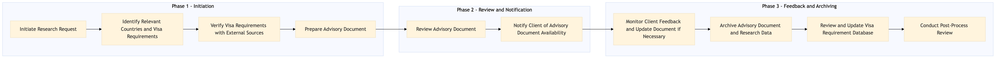

The process document outlines the steps for researching and advising on visa and entry requirements for travelers, ensuring compliance with global regulations.
| Trigger | A request from a client or internal team member regarding visa and entry requirements for upcoming travel. |
| Outcome | Successful completion of research and provision of accurate, up-to-date advisory documents to the requesting party. |
| Systems | Expedia Open World Partner Central Amadeus NDC Sabre GDS Travelport EVC One Key TravelAds AWS SageMaker Snowflake Kafka Salesforce Tableau SAP Concur T2 SAP Concur Expense Amex GBT Neo/Complete Amadeus GDS SAP S/4HANA International SOS Cvent Amex Corporate Card VCN SAP Analytics Cloud Workday |

Click to enlarge
| Step | Name & Pain Point | Role | System | Input | Output | KPI | Flags |
|---|---|---|---|---|---|---|---|
| 1.1 | Initiate Research Request Handling urgent requests | Travel Consultant | Expedia Open World, Partner Central | Client request with travel details | Research request logged in system | Request received within 24 hours | ⚠ Exception |
| 1.2 | Identify Relevant Countries and Visa Requirements Complexity in visa regulations | Travel Consultant | AWS SageMaker, Snowflake | Travel itinerary details | List of countries and visa requirements | 90% accuracy in identifying visa requirements | ⚠ Exception |
| 1.3 | Verify Visa Requirements with External Sources Accessing up-to-date information | Travel Consultant | Kafka, Salesforce | List of countries and visa requirements | Verified visa requirements | 95% accuracy in verification | ⚠ Exception |
| 1.4 | Prepare Advisory Document Formatting and presentation | Travel Consultant | Tableau, TravelAds | Verified visa requirements | Advisory document with recommendations | Document prepared within 2 business days | ⚠ Exception |
| 1.5 | Review Advisory Document Ensuring regulatory compliance | Compliance Officer | SAP Concur T2, SAP Concur Expense | Advisory document | Approved advisory document | Document reviewed within 1 business day | ◆ Decision |
| 1.6 | Notify Client of Advisory Document Availability Client communication | Travel Consultant | Cvent, Amex Corporate Card | Approved advisory document | Notification sent to client | Notification sent within 1 hour | ⚠ Exception |
| 1.7 | Monitor Client Feedback and Update Document if Necessary Continuous improvement | Travel Consultant | VCN, SAP Analytics Cloud | Client feedback | Updated advisory document (if needed) | Feedback addressed within 2 business days | ◆ Decision |
| 1.8 | Archive Advisory Document and Research Data Data management | Travel Consultant | Workday, EVC | Final advisory document | Document archived in system | Data archived within 24 hours | ⚠ Exception |
| 1.9 | Review and Update Visa Requirement Database Maintaining accurate data | Compliance Officer | SAP S/4HANA, International SOS | Final advisory document | Updated visa requirement database | Database updated within 1 week | ⚠ Exception |
| 1.10 | Conduct Post-Process Review Process optimization | Travel Consultant | One Key, TravelAds | Final advisory document and client feedback | Post-process review report | Review completed within 1 week | ⚠ Exception |